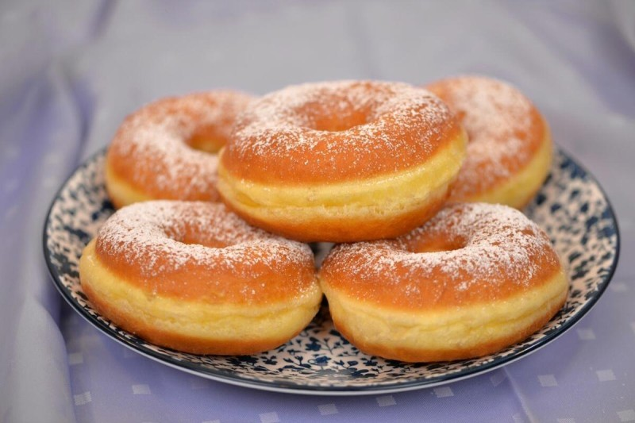

Bunjevački fanki

Čas priprave: 90 minut | Število porcij:
Sestavine:
- 500 g moke
- 250 ml toplega mleka
- 1 kocka svežega kvasa
- 3 rumenjaki
- 50 g masla
- 2 žlici sladkorja
- 1 ščepec soli
- Olje za cvrtje in marelična marmelada za postrežbo
Postopek:
- V toplem mleku z malo sladkorja in moke razpustite kvas ter pustite, da naraste.
- V veliko posodo dajte moko, rumenjake, stopljeno maslo, sol in pripravljen kvas ter zamesite mehko testo.
- Testo pokrijte in pustite vzhajati na toplem mestu približno 45 minut.
- Razvaljajte testo na debelino 1 cm, izrežite kroge in jih ponovno pustite vzhajati 15 minut.
- Fankije cvrite v vročem olju do zlato rjave barve na obeh straneh ter jih postrezite z marelično marmelado.